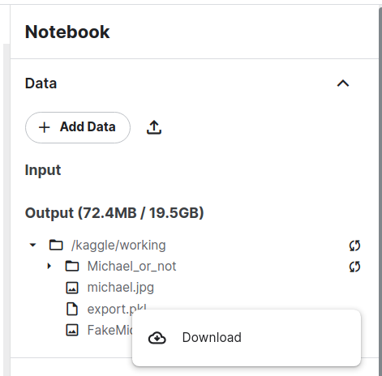
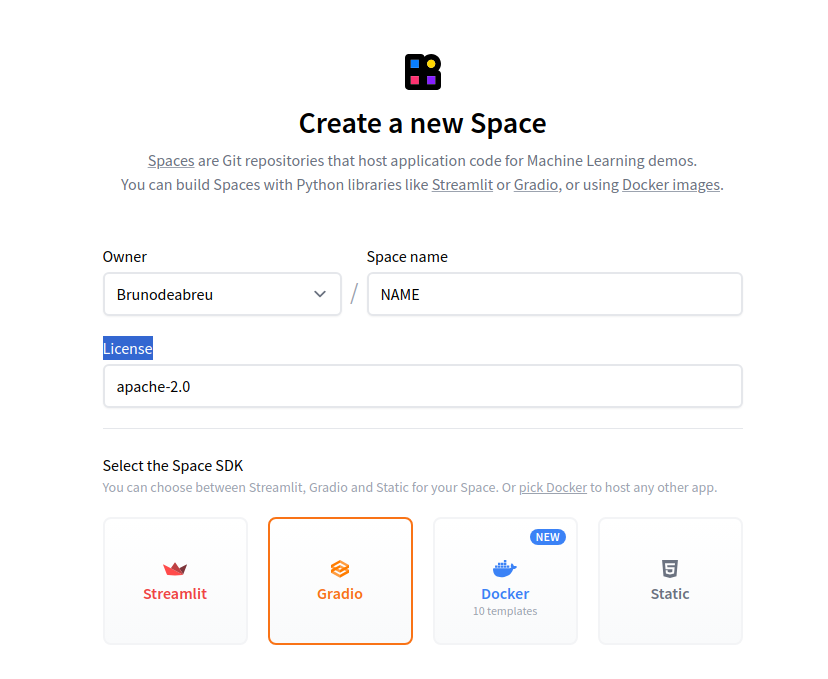
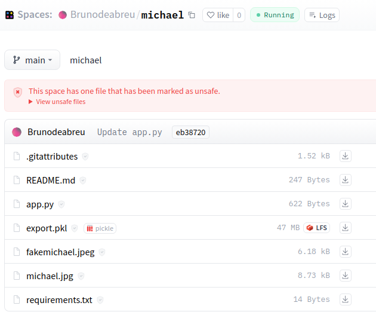
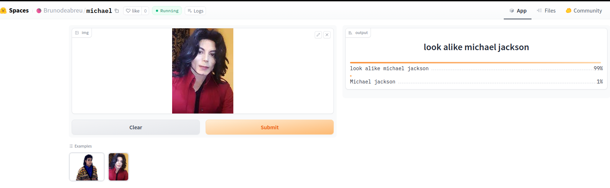

Step by step to create a first computer vision model
This tutorial describe how to create a computer vision model to classify if the picture is from real Michael Jackson or a look alike person
Step by step to create the first model
Is Michael Jackson alive ?
STEP 1 : Create notebook on kaggle
On kaggle creare a notebook : File/New notebook
STEP 2: install packages
Install fastai and gradio
!pip install -Uqq fastai
!pip install gradio
STEP 3: import libs
Import fastai core and some libs
from fastcore.all import *
import time
from fastdownload import download_url
from fastai.vision.all import *
from fastai.vision.widgets import *
import pathlibSTEP 4: create search function
Create a function to search images on DDG
def search_images(term, max_images=200):
url = 'https://duckduckgo.com/'
res = urlread(url,data={'q':term})
searchObj = re.search(r'vqd=([\d-]+)\&', res)
requestUrl = url + 'i.js'
params = dict(l='us-en', o='json', q=term, vqd=searchObj.group(1), f=',,,', p='1', v7exp='a')
urls,data = set(),{'next':1}
while len(urls)<max_images and 'next' in data:
data = urljson(requestUrl,data=params)
urls.update(L(data['results']).itemgot('image'))
requestUrl = url + data['next']
time.sleep(0.2)
return L(urls)[:max_images]STEP 5: Test the search function
Try use the function and search for pictures that you are going to work for instance:
birds vs forest : to classify birds
Black vs grizzly vs ted bear
damage car vs car
Types of clouds : ‘cirrus’, ‘stratus’, ‘cumulus’
is Michael jackson alive?
Michael look alike person
urls = search_images('look alike michael jackson', max_images=1)
dest = 'FakeMichael.jpg'
download_url(urls[0], dest, show_progress=False)
im = Image.open(dest)
im.to_thumb(256,256)Michael Jackson
download_url(search_images('Michael jackson', max_images=1)[0], 'michael.jpg', show_progress=False)
Image.open('michael.jpg').to_thumb(256,256)
STEP 6 : Download images
Lets do a for loop to download more images
searches = 'Michael jackson','look alike michael jackson'
path = Path('Michael_or_not')
from time import sleep
for o in searches:
dest = (path/o)
dest.mkdir(exist_ok=True, parents=True)
download_images(dest, urls=search_images(f'{o} photo'))
sleep(10) # Pause between searches to avoid over-loading server
download_images(dest, urls=search_images(f'{o} sun photo'))
sleep(10)
download_images(dest, urls=search_images(f'{o} shade photo'))
sleep(10)
resize_images(path/o, max_size=400, dest=path/o)
STEP 8: clean failed images
Remove failed images
failed = verify_images(get_image_files(path))
failed.map(Path.unlink)
len(failed)
STEP 9: Create data block
Create a data block
dls = DataBlock(
blocks=(ImageBlock, CategoryBlock),
get_items=get_image_files,
splitter=RandomSplitter(valid_pct=0.2, seed=42),
get_y=parent_label,
item_tfms=[Resize(192, method='squish')]
).dataloaders(path, bs=32)
dls.show_batch(max_n=6)STEP 10: Train the model
Lets create the learn or model and fine tune
learn = vision_learner(dls, resnet18, metrics=error_rate)
learn.fine_tune(3)STEP 11: Test the model
is_michael,_,probs = learn.predict(PILImage.create('FakeMichael.jpg'))
print(f"This is a: {is_michael}.")
print(f"Probability He is Michael: {probs[0]:.4f}")This is a: look alike michael jackson. Probability He is Michael: 0.0086
STEP 12: Export and Download the model
learn.path = Path('.')
learn.export()
To Download from kaggle:

STEP 13 : Create spaces on huggingFace.co
Access [huggingface.co)[https://huggingface.co/spaces], click in NEW and select Space, s this is similar github, add the name, select SDK gradio, hardware,license and create, after that you going to receive git clone command and instructions to create your gradio app.py

STEP 14: Create the app
Clone hugging face repo
git clone <repo>cd
<repo_name>Create an
app.pyon the app you need to :
import libs
load model
crete a list of categories
create a function to classify, this function will call the
.predictand perform the predictionCreate a button to input new images
lanch the gradio interface
Sample
__all__ = [ 'learn', 'classify_image', 'categories', 'image', 'label', 'examples', 'intf']
# import libs
from fastai.vision.all import *
import gradio as gr
# load model
learn = load_learner('export.pkl')
# list of categories
categories = ('Michael jackson', 'look alike michael jackson')
## Classify func
def classify_image(img):
pred,idx,probs = learn.predict(img)
return dict(zip(categories, map(float,probs)))
# input new image
image = gr.inputs.Image(shape=(192, 192))
label = gr.outputs.Label()
examples = ['michael.jpg', 'fakemichael.jpg']
## interface
intf = gr.Interface(fn=classify_image, inputs=image, outputs=label, examples=examples)
intf.launch(inline=False)
Input two sample images of each category
Create a
requirements.txtto build the container with neecessary libsfastaiandgradioCommit and add the files to repo, you will see something like :

STEP 15: Test the APP
If the container has been create successfully you will see the app on APP link

TRY :